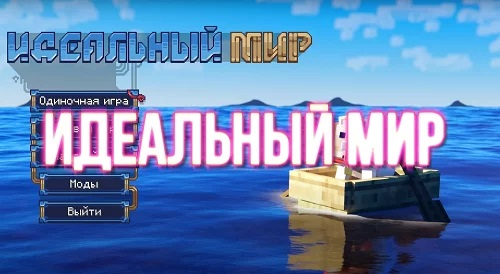
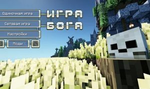
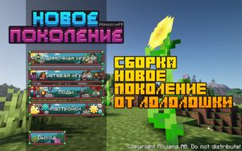
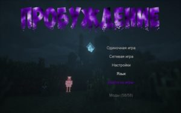
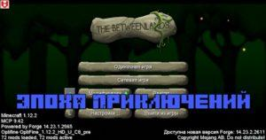
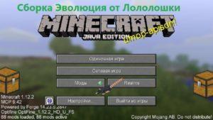
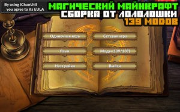
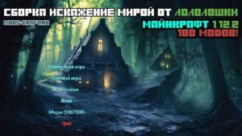
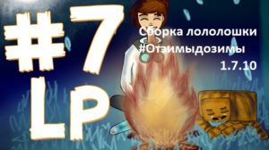
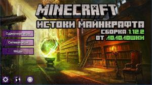

MrLololoshka
Роман Фильченков (MrLololoshka) – российский летсплейщик, получивший большую популярность в сегменте YouTube благодаря обзорам по игре Minecraft. Его аудитория насчитывает несколько миллионов подписчиков средним возрастом 12—14 лет. Он является одним из первых настолько молодых блоггеров, которые смогли достичь такую высокую цель в 3 000 000 подписчиков.
Идеальный мир 1.16.5
Идеальный мир — техническая (индустриальная) сборка от Лололошки одноименного сезона. Содержит большое количество интересных модов, что позволяет пройти приключения лололошки. Чтобы не было спойлеров, сборка без сюжета. Всего в ней 260 модов, среди которых РПГ система, много декора, животных. В основе сюжета лежит то, что как будто игрок попал в мир будущего, где окружает много опасностей, а сам он является типа дивергентом и пытается разобраться что творится вокруг.
СкачатьИгра Бога 1.16.5
Эта качественная, продуманная и интересная сборка, сделанная на версии 1.16.5 и по словам автора, включающая в себя почти 180 различных модов и библиотек. Все эти слова и вправду имеют под собой основания, так-как «Игра Бога» действительно содержит множество самых разноплановых модов – от узкоспециализированных минималистичных модов, привносящих в игру максимум реалистичности и удобства для игрока, до глобальных модов, расширяющих магические и технико-индустриальные возможности как персонажа, так и мира в целом.
СкачатьНовое Поколение 1.15.2
Сборка от Лололошки — «Новое поколение», которая создана на версии Майнкрафт 1.15.2. Это самая продвинутая и стабильная сборка из всех, что есть у данного летсплейщика, поскольку она имеет собственный сюжет и сбалансированные моды. Вас ждут драконы, потусторонние измерения, мёртвые боги и даже изменения мира. Если в прошлых сборках вы должны были сами что-то сделать, чтобы что-то произошло, то здесь вы будете проходить заскриптованные сюжетные линии. Во время прохождения вы заметите очень красивые биомы, сменяемые времена года, множество новых дружелюбных и враждебных мобов, а также исследуемые структуры с боссами.
СкачатьПробуждение 1.7.10
Вас ждут глобальные моды, изучение магии и навыков, данжи, новые блоки, технология и индустриализация — всего 58 модификаций, базирующихся на версии 1.7.10
СкачатьЭпоха приключений 1.12.2
Сборка minecraft 1.12.2 от известного Летсплеера — «Лололошки» с 60 модами в составе клиента. Здесь упор сделан, в основном, на техническую тематику, но есть и магические моды, новые измерения, изменённая боевая система и прочее, чего вы так хотите
СкачатьЭволюция 1.12.2
Cборка от Лололошки под названием «Эволюция» под версию Майнкрафт 1.12.2. Основные моды сборки — это обновленный ДивайнРПГ и Путешествие к свету, которые несомненно добавят незабываемые эмоции от путешествия по новым мирам, биомам и данжам. Кроме этого была добавлена частичка реализма в виде времён года, интересной системы крафта, а также прокачкой навыков вашего персонажа. Мы все прекрасно знаем, как в остальных сборках Лололошки, моды совмещены довольно грамотно с балансом и реализмом в выживании с сохранением ванильной стилистики игры.
СкачатьМагический майнкрафт 1.12.2
Сборка от Лололошки под названием «Магический майнкрафт» или «Магические похождения», как вам больше удобно, где вы будете играть в необычных условиях и попытаться выживать среди магических явлений. В сборке присутствует 139 модов. и все они очень хорошо сбалансированы для интересных приключений в Майнкрафт. Не забывайте следовать подсказкам в главном меню и по книжке, что даётся на старте игры, а также вы можете посмотреть рецепты крафта прямо в игре
СкачатьИскажение миров 1.12.2
Cборка майнкрафт 1.12.2 от известного летсплейщика «Лололошка» под названием Искажение миров. В составе сборки около 100 отличных дополняющих друг-друга модов. Здесь основной упор сделан на хардкорное выживание и реализм. Сам лололошка сказал, что в «искажении» Вам будет непросто выживать.Но и приятные вещи есть, как например, выполнение квестов у жителей и неплохая система прокачки навыков персонажа игры. Множество типов оружия, брони, рецептов и блоков, скучно не будет
СкачатьОт зимы до зимы 1.7.10
Известная и всеми любимая сборка «От зимы до зимы» от Лололошки для майнкрафт 1.7.10 с довольно интересными модами, которую только украсят и улучшат игру в лучшую сторону. Вы сможете развиваться свою деревню, убивать новых монстров и боссов, использовать порталы в другие миры, а также красоваться красивой природой и новой растительностью. А самое главное — это сменяемые времена года: лето, осень, зима и весна.
СкачатьИстоки Майнкрафт
Упор в клиенте сделан на магию, хардкорном реалистичном выживании и инженерии. Здесь будет всё реалистично: жажда, голод, холод, физика предметов и окружающих, поведение мобов и жителей. А самое главное — красивая генерация мира и атмосфера того самого кубического мира, о которым мы все мечтали, плюс возможность пройти все миссии из серии летсплеев.
Скачать